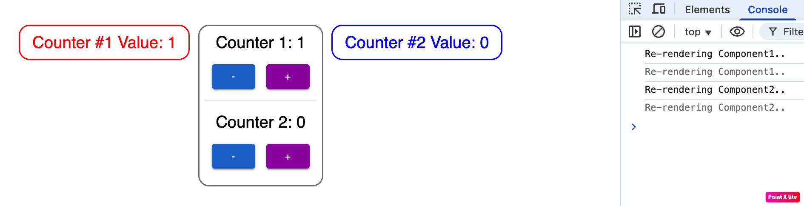
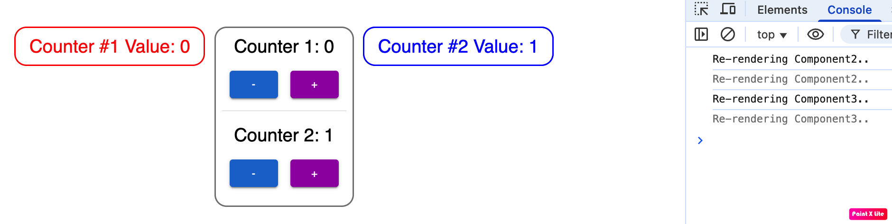

import { create } from 'zustand'
interface CounterStoreType {
count1: number;
count2: number;
getCount1: () => number;
increase1: () => void;
decrease1: () => void;
getCount2: () => number;
increase2: () => void;
decrease2: () => void;
}
const useCounterStore = create((set, get) => ({
count1: 0,
count2: 0,
getCount1: () => get().count1,
increase1: () => set((state) => ({ count1: state.count1 + 1 })),
decrease1: () => set((state) => ({ count1: state.count1 - 1 })),
getCount2: () => get().count2,
increase2: () => set((state) => ({ count2: state.count2 + 1 })),
decrease2: () => set((state) => ({ count2: state.count2 - 1 })),
}))
export default useCounterStore
import React from 'react'
import useCounterStore from '../store/counterStore'
import { Box, Typography } from '@mui/material'
const Component1: React.FC = () => {
const count1 = useCounterStore((state) => state.count1);
console.log("Re-rendering Component1..");
return (
<Box
sx={{
border: '2px solid red',
borderRadius: '16px',
p: 1,
textAlign: 'center',
width: '100%',
}}
>
<Typography variant="h5" color="red">
Counter #1 Value: {count1}
</Typography>
</Box>
)
}
export default Component1
import React from 'react'
import useCounterStore from '../store/counterStore'
import { Box, Button, Typography, Stack } from '@mui/material'
const Counter: React.FC<{ title: string; getCount: () => number; onIncrease: () => void; onDecrease: () => void }> = ({
title,
getCount,
onIncrease,
onDecrease,
}) => (
<Box sx={{ mb: 2 }}>
<Typography variant="h5" sx={{ mb: 2 }}>
{title}: {getCount()}
</Typography>
<Stack direction="row" spacing={2} justifyContent="center">
<Button variant="contained" color="primary" onClick={onDecrease}>
-
</Button>
<Button variant="contained" color="secondary" onClick={onIncrease}>
+
</Button>
</Stack>
</Box>
);
const Component2: React.FC = () => {
const {
getCount1,
increase1,
decrease1,
getCount2,
increase2,
decrease2,
} = useCounterStore();
console.log("Re-rendering Component2..");
return (
<Box
sx={{
border: '2px solid gray',
borderRadius: '16px',
p: 1,
textAlign: 'center',
width: '100%',
}}
>
<Counter title="Counter 1" getCount={getCount1} onIncrease={increase1} onDecrease={decrease1} />
<Box sx={{ borderTop: '1px solid lightgray', pt: 2, mt: 2 }}>
<Counter title="Counter 2" getCount={getCount2} onIncrease={increase2} onDecrease={decrease2} />
</Box>
</Box>
)
}
export default Component2
import React from 'react'
import useCounterStore from '../store/counterStore'
import { Box, Typography } from '@mui/material'
const Component3: React.FC = () => {
const count2 = useCounterStore((state) => state.count2);
console.log("Re-rendering Component3..");
return (
<Box
sx={{
border: '2px solid blue',
borderRadius: '16px',
p: 1,
textAlign: 'center',
width: '100%',
}}
>
<Typography variant="h5" color="blue">
Counter #2 Value: {count2}
</Typography>
</Box>
)
}
export default Component3
import React from 'react'
import { Container, Grid } from '@mui/material'
import Component1 from './components/Component1'
import Component2 from './components/Component2'
import Component3 from './components/Component3'
const App: React.FC = () => {
return (
<Grid container spacing={4} justifyContent="center">
<Grid item xs={12} sm={4}>
<Component1 />
</Grid>
<Grid item xs={12} sm={4}>
<Component2 />
</Grid>
<Grid item xs={12} sm={4}>
<Component3 />
</Grid>
</Grid>
</Container>
)
}
export default App
Output

